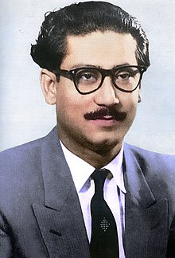

Father of the Nation Bangabandhu Sheikh Mujibur Rahman (1920-1975) is the architect of independent Bangladesh. Born on 17 March 1920 in the village Tungipara under the Gopalganj Sub-division (currently district) in the district of Faridpur, Sheikh Mujibur Rahman’s father, Sheikh Lutfar Rahman, was a serestadar in the civil court of Gopalganj. Sheikh Mujibur Rahman passed his matriculation from Gopalganj Missionary School in 1942, IA (Twelfth Grade) from Islamia College, Calcutta in 1944 and BA from the same College in 1947. In 1946, Mujib was elected general secretary of the Islamia College Students Union. He was an activist of the Bengal Provincial Muslim League and a member of the All-India Muslim League Council from 1943 onwards.
Bangabandhu Sheikh Mujibur Rahman was a founding member of the East Pakistan Muslim Students League (est. 1948), one of the founding joint secretaries of the East Pakistan Awami Muslim League (est. 1949), general secretary of the Awami League (1953-1966), president of the Awami League (1966-1974), president of Bangladesh (in absentia from 26 March 1971 to 11 January 1972), Prime Minister of Bangladesh (1972-24 January1975), president of Bangladesh (25 January 1975-15 August 1975).
Read more about Bangabandhu Sheikh Mujibur Rahman on Wikipedia